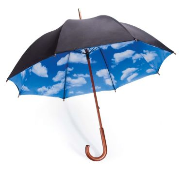
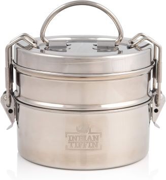
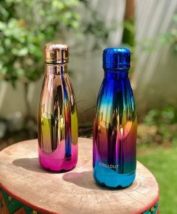
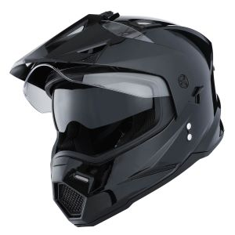
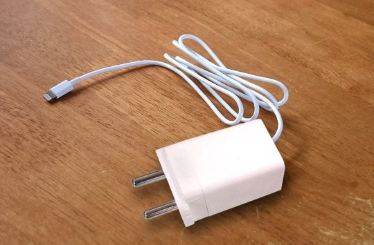
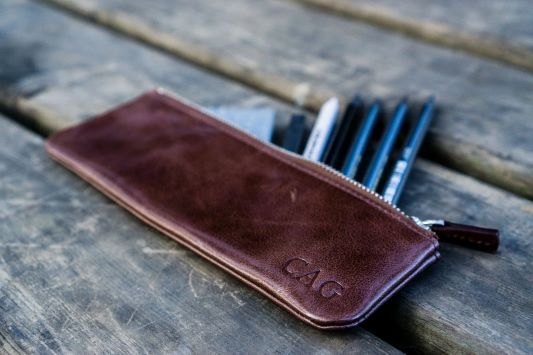

.jpeg)
Lost Phone
Found By: Priya Patel, 1st-year Medical student
Location: Lecture Hall A, Seat 8
Description: A black Samsung Galaxy smartphone with a cracked screen and a protective case. The phone's lock screen displays a picture of a pet dog. The device seems operational, though the cracks on the screen suggest a recent mishap.
Lost Laptop
Found By: Amogh Bedekar, 2nd-year Computer Engineering student
Location: Library, Computer Lab
Description: A silver Dell Inspiron laptop with a 15.6-inch screen. The laptop has a few stickers on the cover, representing various programming languages and tech companies. It's powered on, displaying a login screen. The trackpad shows signs of wear, and the laptop's body bears a few minor scratches.

Lost Umbrella
Found By: Tanay Nandgaonkar
Location: Auditorium, Last Seat
Description:A collapsible black umbrella with an automatic open and close button. The umbrella features a sturdy fiberglass frame and a comfortable rubberized handle. There are a few areas of slight rust on the metal parts and a small tear in the fabric near one of the spokes.

Lost Tiffin Box
Found By: Kunal Shenoy, Second year BBA student
Location: Lab 220, Second Floor
Description: A three-tiered plastic tiffin box in shades of green and white. The tiffin compartments are clean and have the faint aroma of home-cooked food. A small crack is visible on the lower corner of one compartment, possibly due to prior usage.

Lost Water Bottle
Found By: Shreyash Bailkar
Location: Gymnasium, Weightlifting Area
Description: A stainless steel water bottle with a screw-on cap, adorned with motivational quotes and a blue gradient design. The bottle is insulated to keep liquids cold for extended periods. A few minor scratches are present on the bottom from use on various surfaces.

Lost Helmet
Found By: Satyam Karde, First year BAF Student
Location: Cafeteria
Description: A matte black bicycle helmet with adjustable straps and ventilation holes, showing signs of regular use. The inner padding is intact, and there's a reflective strip on the back for visibility. The helmet's surface is slightly scuffed, indicating previous wear.

Lost Mobile Charger
Found By: Adarsh Herle, Fourth year Bcom student
Location: Lab 101, 1st floor
Description: A white colour charger. It has a red cable, the end of the cable is damaged. It appears to be of OnePlus brand.

Lost Pouch
Found By: Lakshya Sharma, 5th year MBA-Tech student
Location: Roon No 307, Third floor
Description: It is a leather pouch of brown colour. It has only one compartment and names scribbled on the outer side. It has 5 pens and one pencil.
Lost Phone
Found By: John Doe
Location: Park
Description: A lost phone found at the park. Please contact to claim.
Lost Phone
Found By: John Doe
Location: Park
Description: A lost phone found at the park. Please contact to claim.